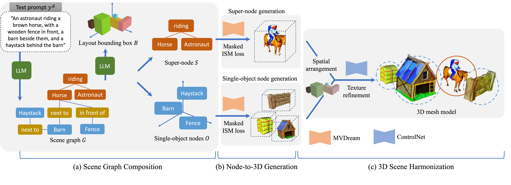

Abstract
Recent advancements in object-centric text-to-3D generation have shown impressive results. However, generating complex 3D scenes remains a challenge due to intricate object relationships. Additionally, existing methods primarily rely on score distillation sampling (SDS) limiting their ability to manipulate multiple objects with specific interactions.
To address these challenges, we introduce GraLa3D: a novel framework for Scene Graph and Layout-Guided 3D Scene Generation. Given a text prompt describing a complex 3D scene, GraLa3D utilizes a large language model (LLM) to construct a scene graph enriched with layout bounding box information. Our framework uniquely represents scenes using single-object nodes and composite super-nodes to better capture object relationships.
A key innovation of GraLa3D is its ability to model object interactions within super-nodes, ensuring accurate spatial alignment while mitigating appearance leakage across objects. Experimental results confirm that GraLa3D effectively overcomes existing limitations and generates complex 3D scenes that closely align with text descriptions.
Method
Scene Graph Decomposition
We use an LLM to generate a structured scene graph from a text prompt, representing objects and their relationships, and the corresponding bounding box layout. To differentiate spatial and interaction-based relations, the scene graph is decomposed into:
- Single-object nodes for spatially related objects.
- Super-nodes for interacting objects.
Node-to-3D Generation
3D Generation from Single-Object Nodes
For single-object nodes, spatial positioning is predefined by the bounding boxes. We introduce a layout constraint that penalizes objects extending beyond their designated area, ensuring accurate alignment with the scene description.
3D Generation from Super-Nodes
For interacting objects, maintaining both spatial alignment and semantic consistency is crucial. Our approach applies:
- SDS loss to jointly optimize object positioning for text alignment.
- Layout loss to enforce correct placement based on bounding boxes.
- Localization loss using attention maps to prevent misclassification and ensure accurate shape and position.
Results

Our qualitative results demonstrate that GraLa3D successfully generates complex 3D scenes that are well-structured, semantically meaningful, and closely aligned with input text prompts.